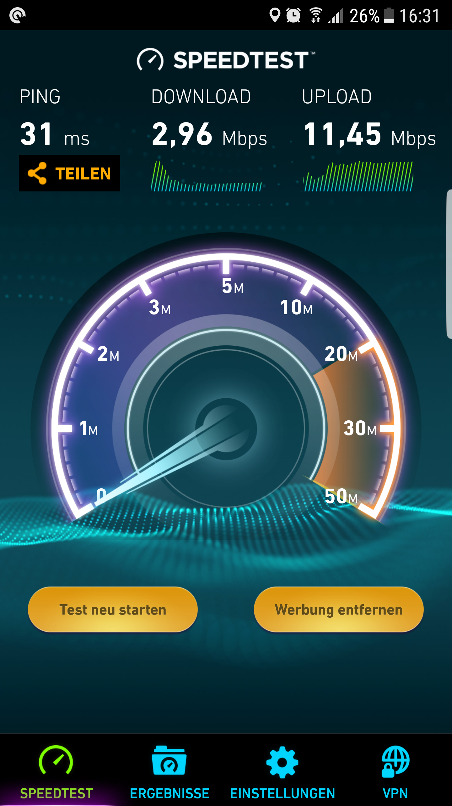
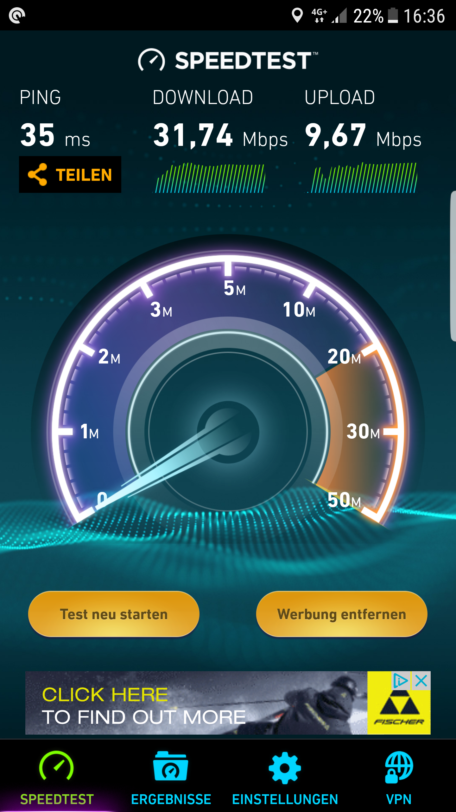

Guten Morgen,
Ich habe den Tarif Turbo mit 50Mbits down und 10 up.
Von den 50 kommen zu 99% höchstens 6 bei mir an. Eher aber kommen 2 oder 3 Mbit durch.
Anfangs war das alles super und ich erreichte Geschwindigkeiten zwischen 35 und 50Mbit.
Ich habe schon mehrmals über dieses Problem gelesen. Mein Handy, auch im tmobile netz kann beispielsweise neben dem Router liegen und erreicht 35mbit.
Es kann nicht an der netzabdeckung liegen.
Vertrag ist zum April 2018 gekündigt.
Eine Riesen Große Frechheit in meinen Augen
Am 12.12.2017 um 09:40 schrieb No0k:
Guten Morgen,
Ich habe den Tarif Turbo mit 50Mbits down und 10 up.
Von den 50 kommen zu 99% höchstens 6 bei mir an. Eher aber kommen 2 oder 3 Mbit durch.
Anfangs war das alles super und ich erreichte Geschwindigkeiten zwischen 35 und 50Mbit.
Ich habe schon mehrmals über dieses Problem gelesen. Mein Handy, auch im tmobile netz kann beispielsweise neben dem Router liegen und erreicht 35mbit.
Es kann nicht an der netzabdeckung liegen.
Vertrag ist zum April 2018 gekündigt.
Eine Riesen Große Frechheit in meinen Augen
hallo!
darf ich dich um einen gefallen bitten, falls das für dich nicht zu umständlich ist und nichts dagegen spricht (vorausgesetzt smartphone hat auch einen t-mobile tarif)!
diese frage stellte sich mir schon mehrere male jedoch hatte niemand die möglichkeit das zu testen. da du schreibst, das am telefon die downloadrate gut ist, was wäre mal die sim vom telefon in den router zu geben und quasi mit dem handy tarif im router einen speedtest zu machen (datenvolumen im blick behalten!)? mobilgeräte werden ja bekanntlicherweise im lte netz bevorzugt behandelt..
wäre echt genial, wenn das möglich wäre!!
")
lg
Hallo guten Tag,
Ich denke mir das du ggf auf einen Endgerätedefekt hinaus möchtest?!
Um dieses auszuschliessen, kaufte ich mir bereits vor längerer Zeit eine Fritz Box lte.
Gleiches Phänomen auch dort zu beobachten.
Ich kann natürlich aber auch die Handy sim in den Router packen und das Foto hochladen.
Mache ich gleich heute Abend
Bis dahin ... LG Andy
Brutal... eben noch mitm Handy 50mbits Download gehabt und kaum in der Home net Box
...

Jetzt umgedreht... also die Datenkarte ins Handy rein..

Den Router im 3g netz laufen zu lassen funktioniert auch besser als vorher...15mbit ca...
Aber das ist ja auch noch nicht die Lösung des Problems
danke
@No0k
fürs schnelle testen!!!
nö nicht auf hardware defekt sondern genau auf das, was du damit herausgefunden hast.
erst dachte ich es wird der tarif differenziert aber es ist die hardware. bedeutet also wenn "not am manne ist",
daten-sim vom router in ein altes smartphone rein und hotspot erstellen
. wifi geräte könnten damit eine
recht brauchbare geschwindigkeit nutzen. ist sicherlich keine dauerlösung aber wenn das hilft..

ob das für die kleinen akkubetriebenen mobilen lte router auch zutrifft wäre noch interessant. fällt eigentlich
auch unter mobilgerät..
")
viell versuchst es ja mal, wenn ein zweites smartphone zur hand hast.. die idee finde ich zumindest gut!
vielen dank nochmal
lg
{kind=link}
{kind=link}